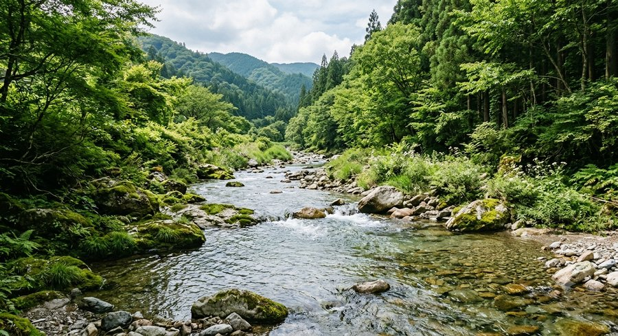
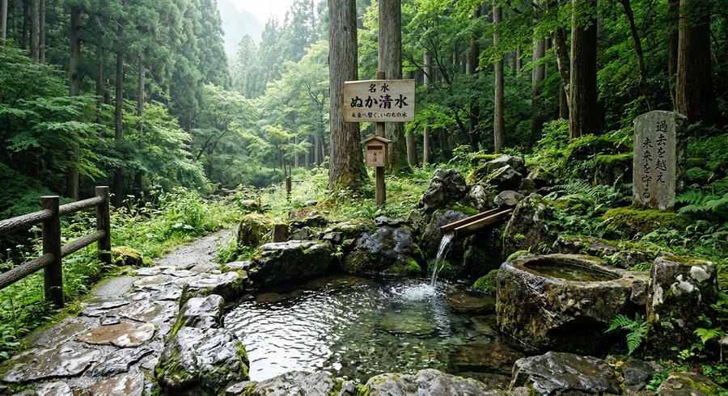

ピコぬ市の水道は、市内を流れるぬかピコ川をはじめとした豊かな水環境によって支えられています。安全で安心な水を市民の皆さまへ届けるため、水質管理や水道施設の維持管理を行っています。また、水は生活を支えるだけでなく、街の歴史や記憶とも深く結びついています。
ぬかピコ川とピコぬ市の水の歴史
ピコぬ市の発展は、ぬかピコ川とともにありました。古くから川沿いには人々の暮らしがあり、水は生活や産業を支える大切な存在でした。
しかし、1982年(昭和57年)、大型台風による記録的な豪雨により、ぬかピコ川が大幅に増水し、一部地域で浸水や堤防の被害が発生しました。
この出来事は、水の恵みだけでなく、水と共に暮らすための備えの大切さを市民が改めて考えるきっかけとなりました。ピコぬ市では、この経験を忘れないため、河川管理、水害対策、水環境の保全に取り組んでいます。
ピコぬ市の水源
ぬかピコ川
市の主要な水源のひとつです。豊かな自然に囲まれたぬかピコ川は、市民の暮らしを支えるとともに、ピコぬ市を象徴する風景のひとつとなっています。過去の災害の記録を受け継ぎながら、現在も大切に守られています。
名水百選「ぬか清水」

ピコぬ市北部の山間に湧く「ぬか清水」は、1985年(昭和60年)に名水百選に選定されました。古くから地域の人々に親しまれてきた湧水で、かつては生活用水としても利用されていました。
ぬかピコ川の源流域に位置し、現在も多くの人が訪れる、ピコぬ市を代表する水の景観のひとつです。地域では、水環境を未来へ残すため、清掃活動や保全活動が続けられています。
水を守る取り組み
水質管理
定期的な水質検査を行い、安全で良質な水を安定して供給できるよう努めています。
災害への備え
地震や豪雨などの災害時にも安定して水を届けられるよう、水道施設の強化や給水体制の整備を進めています。
水環境の保全
ぬかピコ川や市内の水環境を未来へ残すため、自然環境の保護や水源地域の保全に取り組んでいます。